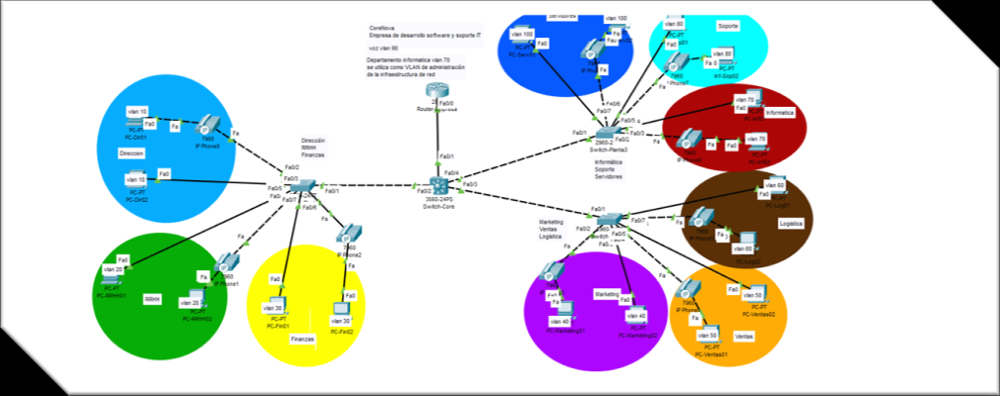

PROYECTO 01 · REDES
CoreNova — Diseño de una red empresarial
Diseño y simulación de la infraestructura de red de una empresa tecnológica ficticia con más de 120 empleados distribuidos en distintos departamentos. La topología se realizó en Cisco Packet Tracer con un switch multicapa como núcleo y switches de acceso para conectar los equipos finales.
Cisco Packet TracerVLANInter-VLAN routingDHCPTrunksTelefonía IP

Topología general de CoreNova: red segmentada por departamentos, conectada mediante una infraestructura centralizada.
Objetivos del proyecto
- Diseñar y simular una red empresarial organizada por departamentos.
- Separar el tráfico mediante VLAN independientes para Dirección (10), Recursos Humanos (20), Administración y Finanzas (30), Marketing (40), Ventas (50), Logística (60), Informática (70), Soporte (80), voz IP (90) y servidores (100).
- Permitir la comunicación entre VLAN mediante un switch multicapa Cisco 3560.
- Automatizar la asignación de direcciones IP con DHCP y configurar una VLAN dedicada a telefonía IP.
Configuración y tecnologías
- Switch core de capa 3 y switches de acceso Cisco 2960.
- SVI y comando
ip routingpara el enrutamiento entre VLAN. - Puertos de acceso asignados a las VLAN de departamento y enlaces trunk para transportar varias VLAN entre switches.
- Router Cisco 2811 con pools DHCP independientes para las distintas redes.
- VLAN 90 para voz IP con teléfonos Cisco 7960; VLAN 70 destinada a Informática y administración de la infraestructura.
Qué aprendí
El proyecto me permitió practicar la segmentación de redes, la configuración de switches, el routing inter-VLAN, DHCP, los enlaces trunk y la organización de una infraestructura de red empresarial.
La memoria descargable contiene la explicación completa y ejemplos de configuración. La imagen muestra la topología aportada para el proyecto.